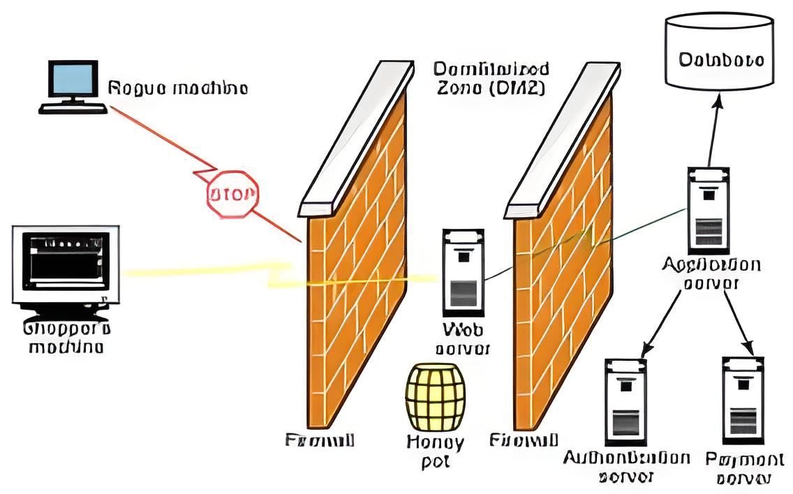

Seguridad en la comunicación
HoneyNets
Hoy en día la cantidad de ataques que las organizaciones reciben va en aumento, de igual forma, las técnicas, herramientas y métodos utilizados para estos se encuentran en constante evolución y son muy variados. Es por ello por lo que los expertos en ciberseguridad se encuentran en la necesidad de actualizarse constantemente con respecto a estos cambios en esta clase de incidentes. Sin embargo, la forma de obtener información con respecto a la evolución en los mecanismos utilizados no se encuentra disponible todo el tiempo, pues no está publicada en medios de comunicación de confianza que puedan informar adecuadamente sobre ellos.
Debido a la situación anterior es que los encargados en la protección de las redes han comenzado a implementar herramientas conocidas como HoneyNets, las cuales análogamente hacen referencia a una red de miel, la cual se vea lo suficientemente atractiva y real como para que ciberdelincuentes realicen ataques con el objetivo de vulnerar la red.
Antes de definir a detalle una HoneyNet se debe definir lo que es una HoneyPot, éste es un sistema señuelo el cual fue diseñado para ser sondeado, atacado y comprometido, y que además tiene la capacidad de detectar, así como, de registrar cada una de estas acciones. Entre las ventajas del uso de estos tipos de sistemas se encuentran la ausencia de falsos positivos al no ser estos sistemas de producción y, por tanto, nadie debería estar tratando de conectarse a él. Por lo anterior se considera que cualquier tráfico que tenga por destino el HoneyPot será sospechoso de ser un sondeo o un ataque y, de forma contraria, cualquier tráfico que proceda del HoneyPot significará que el sistema ha sido comprometido.
El HoneyNet es el HoneyPot más complejo y como ya se mencionó anteriormente, tiene por objetivo poder detectar las intrusiones en sistema y obtener la mayor cantidad de información del ataque, así como, del actor de estos ataques. Esta clase de información permite conocer más acerca de los mecanismos implementados para vulnerar un sistema, se puede aprender acerca de ellos y proceder a la generación de nuevos mecanismos de defensa ante esta clase de ataques. De igual forma, la sola existencia de este tipo de sistemas es un detractor para los ciberdelincuentes pues implica en un inicio al menos una barrera psicológica por el temor a caer una trampa en la cual se puede obtener información del atacante, poniendo en riesgo sus operaciones.
Las HoneyNets deben estar diseñadas de tal forma que todos los elementos que la componen logren controlar el tráfico de la información del intruso, debe tener la capacidad de capturar datos de todos los movimientos que se realizan para intentos de acceso y una vez se ha accedido a la red. Y por último, debe permitir un tráfico seguro de los datos recabados a un centro de datos donde se analiza lo detectado para desarrollar mecanismos de defensa, realizar análisis estadísticos entre otros procesos de interés para las organizaciones y la toma de decisiones para la protección de sus sistemas.
Para conocer más acerca de las HoneyNets y de los HoneyPot te recomendamos mirar el siguiente video: